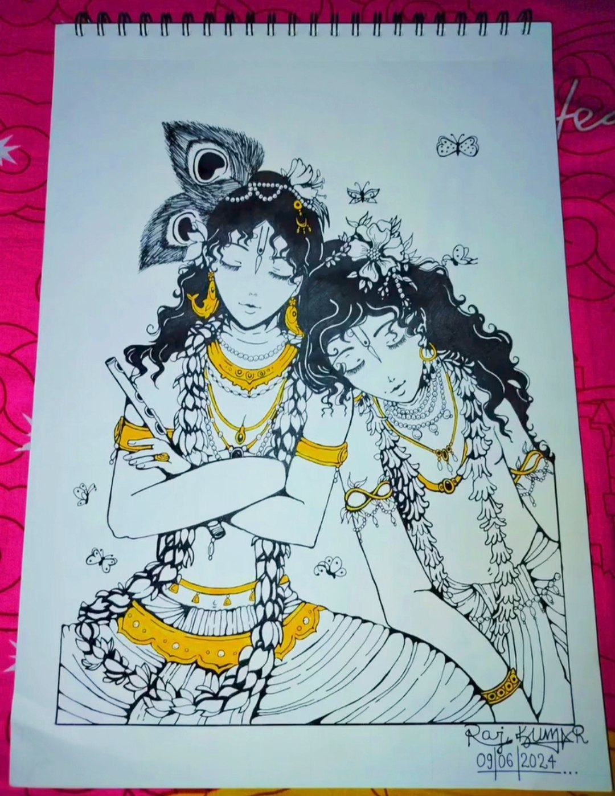

Radha Krishna

Medium:Mandala Art
Year: 2025
This Artwork Represents Radha Krishna In A Detailed Mandala Art Style,
The Radha Krishna Artwork Beautifully Portrays Eternal Love, Devotion, And Divine Harmony, With Graceful
Expressions, Flowing Attire, And The Sacred Flute Symbolizing Spiritual Union, Joy, And The Timeless Bond Between
Soul And Supreme.